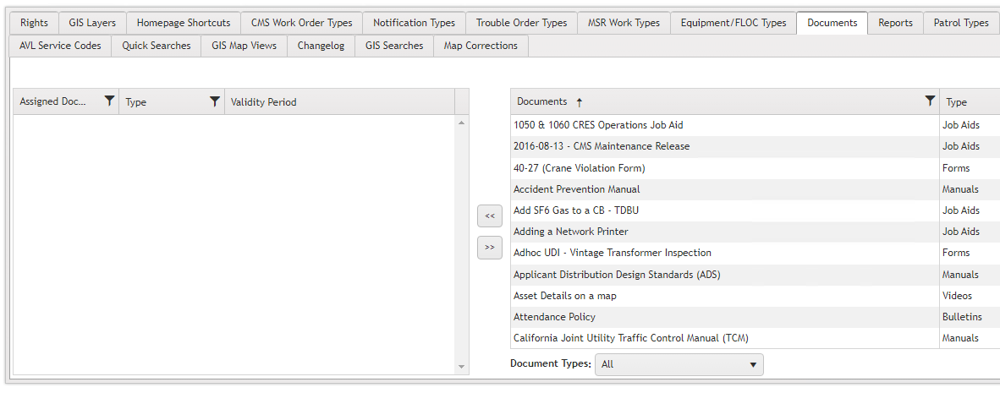
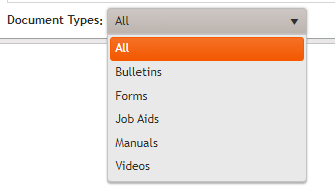
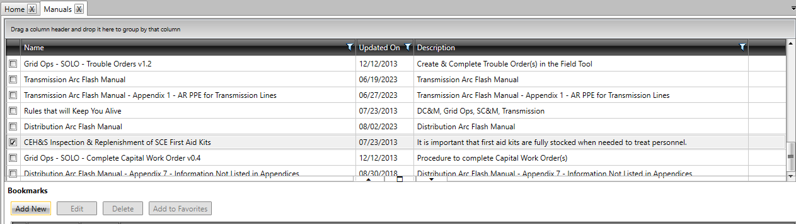
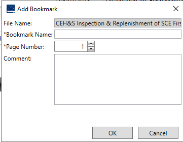
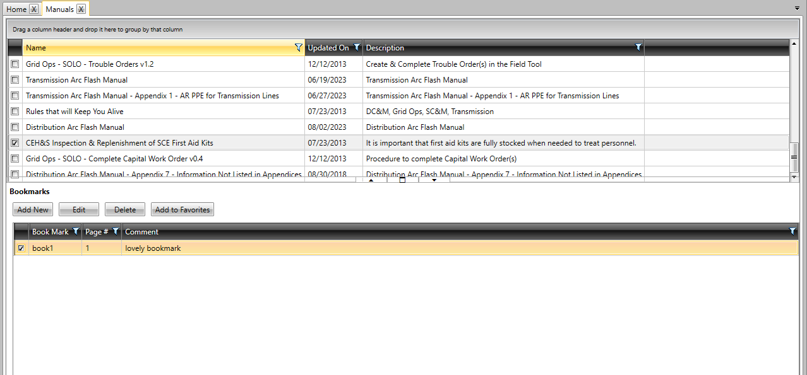

Documents
Documents:
Documents serve as reference guides for completing work items or training on various topics. They come in several types:
They may be used for:
- Information Retrieval: Documents provide information about specific sections.
- Work Item Assistance: They are utilized while completing work items.
- Training: Users can access training videos related to particular topics.
Access Control:
Note: Only users with Administrative or Supervisor privileges can add documents via the CMS Web Portal.
Allowing Access to Documents in CMS Web Portal

Steps
- While logged in as an Administrative user, open Administration → Role Management interface within the CMS Portal.
- Select the Role you wish to modify from the list of roles.
- Access the
Documentstab within the role's details. - Locate and assign access to the related documents to the selected user.
- Save the changes to ensure that users with the selected role have the appropriate access to documents in the CMS.

Types of Documents:
Manuals
Manuals outline steps for completing work items and may include training material or system workflows.
Bulletins
Bulletins are periodic publications released at regular intervals, such as monthly or weekly.
Forms
Forms are used to record work-related information and can be inserted into the system. They may be printable.
Job Aids
Job Aids contain vital information useful for completing work items, including health and safety regulations for hazardous tasks or emergency procedures.
Videos
Videos serve as training materials, providing visual demonstrations for tasks, enabling users to practice procedures and complete tasks independently, especially in fieldwork scenarios.

Bookmarks
Bookmarks are placeholders that the user can add in paginated documents such as .pdf, .doc, or .docx. A user can use a bookmark to mark a key point in a document that the user may want to refer to frequently. Adding a bookmark to favorites, it creates a quick link, which the user can use to quickly navigate to the required point in the document.
Add a bookmark.
-
On the Documents menu, select a document type.
-
The documents of the selected type are displayed in a grid. In the grid, select the check box corresponding to a document.
-
In the Bookmarks section, the Add New button is made available. Note: The user cannot add a bookmark to files such as .jpg, .bmp, .png, .txt, .xls, and .csv. Click Add New.
-
The Add Bookmark dialog box is displayed. In the Bookmark Name box, type a bookmark name.
-
In the Page Number box, enter a page number.
-
In the Comment box, type a comment, which can be additional information such as the purpose of the bookmark or contents on the page (this is an optional step).
 -
Click OK.
-
The bookmark is created, and the page gets refreshed. In the grid, select the check box corresponding to the same document as in step 2.
The newly created bookmark is displayed in the Bookmarks section.
Edit a Bookmark
-
On the Documents menu, select a document type.
-
The documents of the selected type are displayed in a grid. In the grid, select the check box corresponding to a document that contains bookmarks.
-
In the Bookmarks section, the bookmarks are displayed. In the Bookmarks section, select the check box corresponding to a bookmark.
-
In the Bookmarks section, the Edit, Delete, and Add to Favorites buttons are made available.
Note: The Add to Favorites button is unavailable if the bookmark has already been added to favorites. Click Edit. -
The Edit Bookmark dialog box is displayed. Modify the required details, and then click OK.
Delete a Bookmark
-
On the Documents menu, select a document type.
-
The documents of the selected type are displayed in a grid. In the grid, select the check box corresponding to a document that contains bookmarks.
-
In the Bookmarks section, the bookmarks are displayed. In the Bookmarks section, select the check box corresponding to a bookmark.
-
In the Bookmarks section, the Edit, Delete, and Add to Favorites buttons are made available. 
Note: The Add to Favorites button is unavailable if the bookmark has already been added to favorites. Click Delete.
The selected bookmark is deleted. Note: If a bookmark is added to favorites, after deleting the bookmark, the link in the favorites is also deleted.
Add a bookmark to favorites.
-
On the Documents menu, select a document type.
-
The documents of the selected type are displayed in a grid. In the grid, select the check box corresponding to a document that contains bookmarks.
-
In the Bookmarks section, the bookmarks are displayed. In the Bookmarks section, select the check box corresponding to a bookmark.
-
In the Bookmarks section, the Edit, Delete, and Add to Favorites buttons are made available. Note: The Add to Favorites button is unavailable if the bookmark has already been added to favorites. Click Add to Favorites.
-
The Add bookmark as favorite dialog box is displayed asking for confirmation. Click Yes.
-
Open the home page, and then view the added bookmark in the Favorites section.